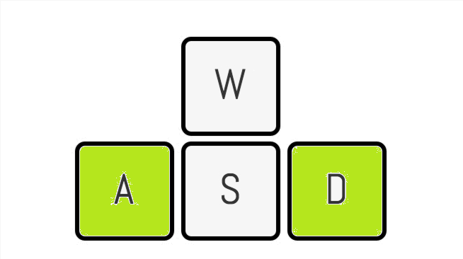

Помогите местному цыплёнку забраться как можно выше!
Вам необходимо передвигать персонажа кнопками Вправо(D) Влево(A), чтобы он прыгал точно по платформам.

Поднимайтесь все выше по области, постоянно перепрыгивая с одной платформы на другую.
После проигрыша Вам будет показано диалоговое окно с правом выбора, начать игру заново или вернуться в главное меню.
* Имейте в виду: это безумно захватывающая игра!
* Избегайте опрометчивых и поспешных прыжков!